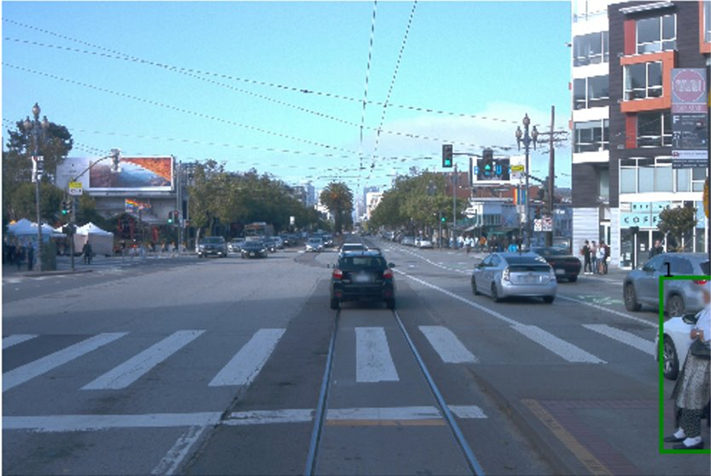
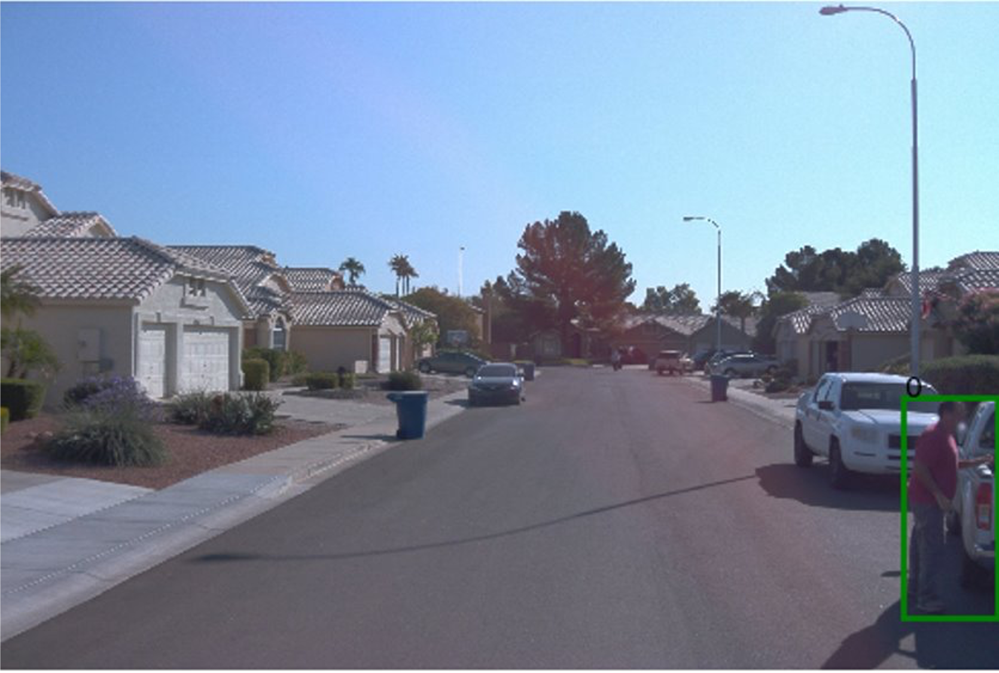

Weak Supervision · Computer Vision
Video as a Sensor for Urban Risk
Programmatic labeling meets computer vision: we generate risk labels from behavioral heuristics and weak supervision when manual annotation is too expensive, surfacing dangerous roadway events at scale.
University of Illinois at Urbana-Champaign

The Problem
Dangerous events are rare. Labels are expensive.
Risky roadway events (near-misses, illegal crossings, cyclist close calls) are rare in dashcam footage but critical to detect. Hand-labeling thousands of hours of video is impractical. We needed a way to generate training labels programmatically from the video signal itself.
Approach
Heuristic labeling from detection + tracking.
We identify compound objects (e.g., cyclist = person + bicycle), track them through occlusion using temporal context, and apply behavioral heuristics (proximity, velocity, trajectory) to generate probabilistic risk labels. Matrix completion weights the noisy signals into usable training data.
Cyclist Tracking
Recovering identity through occlusion.

Baseline: drops cyclist when partially occluded.

Ours: temporal inference recovers missed detections.
Risk Detection
Weak supervision for rare events.


Probabilistic risk labels generated from pose, motion, and contextual heuristics: no manual annotation required.